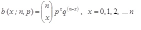

Distribucion binomial:
La distribucion binomial constituye uno de los primeros ejemplos cuando se tratan las distribuciones teoricas discretas.
Fue estudiada por Jacob Bernoulli (Suiza, 1654-1705), quien escribio el primer tratado importante sobre probabilidad.
En esencia, esta distribucion se asocia a un evento Bernoulli, definido como aquel donde solo son posibles dos resultados: exito y fracaso.
De esta forma, sera posible estudiar el numero de exitos en n pruebas independientes.
Si realizamos n veces un experimento en el que podemos obtener exito, E, con probabilidad p y fracaso, F, con probabilidad q(q=1-p) ,
diremos que estamos ante una distribucion binomial de parámetros n y p, y lo representaremos por B(x;n;p). De acuerdo con Walpole et. al., (2012),
la probabilidad de obtener x exitos viene dada por:
